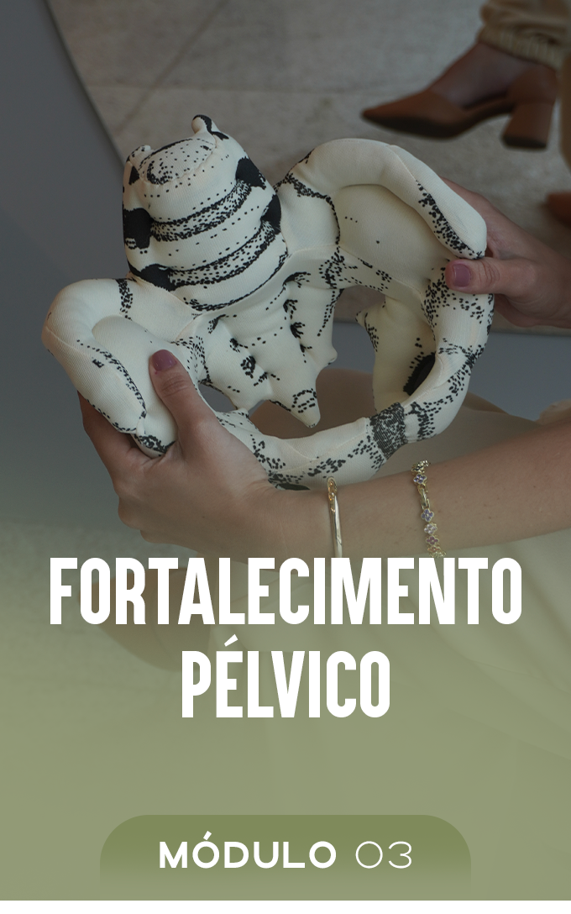
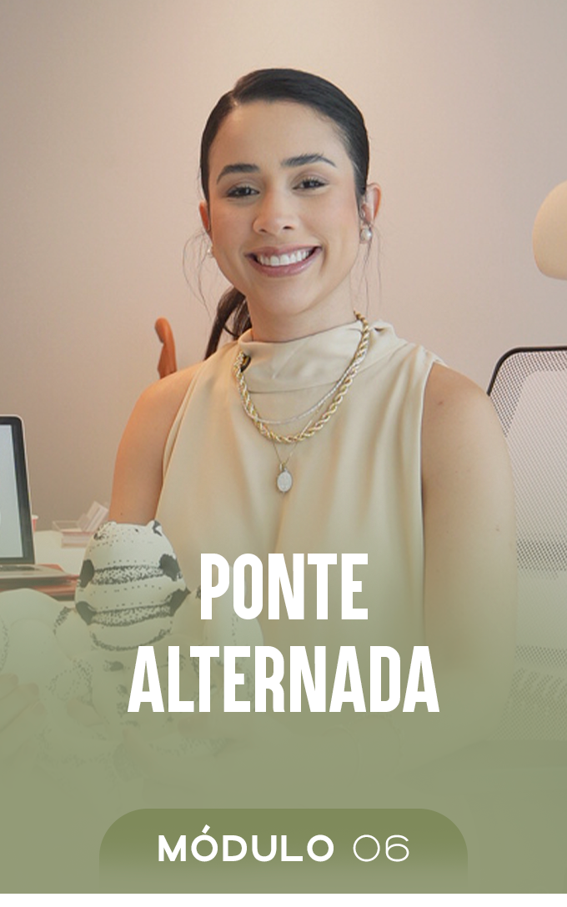

Você vai passar os primeiros 40 dias do pós-parto se recuperando ou se escondendo?
Um método de 30 dias, em 4 aulas, para reativar o abdômen, fortalecer o assoalho pélvico e voltar a se sentir bem no seu próprio corpo. Sem academia, sem equipamento, sem sair de casa.
Você olha no espelho e não reconhece aquela barriga.
Não é gordura. É diferente. É como se o abdômen tivesse desligado e ninguém tivesse avisado ele que o bebê já nasceu.
A dor lombar constante: surge toda vez que você pega o bebê no colo ou passa longos minutos amamentando.
O escape involuntário de xixi: ao espirrar, tossir ou rir alto — e a necessidade constante de disfarçar.
A postura alterada: a sensação incômoda de que o tronco perdeu a sustentação e o corpo ficou instável.
A roupa que não serve: a recusa em comprar um tamanho maior por resistir a aceitar essa nova condição.
Os conselhos sem fundamento: escutar repetidamente que "é normal e com o tempo o corpo volta sozinho".
O tempo que passa: passam-se um, três, oito meses e a função abdominal não se restaura espontaneamente.
Vou te contar o que ninguém explica na alta da maternidade.
Durante a gestação, seu abdômen afastou pra abrir espaço. O assoalho pélvico sustentou um peso que ele nunca tinha sustentado. E a respiração mudou de lugar, porque o diafragma foi empurrado pra cima.
Isso é fisiologia. Aconteceu com todo mundo, e está tudo certo. O problema é o depois.
Alterações Fisiológicas da Gestação:
-
01Afastamento dos Retos Abdominais: a parede abdominal cede para acolher o crescimento do bebê.
-
02Sobrecarga no Assoalho Pélvico: perda de tônus nos músculos que sustentam os órgãos pélvicos.
-
03Alteração do Diafragma: perda da Sinergia Respiratória entre diafragma e abdômen.
ERRO DOS TREINOS TRADICIONAIS
Ir direto para pranchas, abdominais convencionais ou treinos pesados aumenta a pressão intra-abdominal, projeta a musculatura para fora e sobrecarrega o assoalho pélvico fragilizado. Não é falta de esforço. É ordem errada.
REATIVAÇÃO SEQUENCIAL CORRETA
O corpo necessita ser reensinado a ativar a musculatura profunda na ordem fisiológica correta: primeiro o padrão respiratório, depois a cinta natural do transverso, fortalecimento pélvico e transferência funcional.
O que você recebe dentro do método
Confira o leque oficial dos 6 módulos do programa (arraste ou navegue pelas cartas):


RESPIRAÇÃO CONSCIENTE
O ponto de partida que quase todo mundo pula. Aqui você reconecta diafragma e assoalho pélvico, que trabalham juntos como um sistema. Sem isso, nenhum exercício de abdômen funciona de verdade.
O que muda ao final dos 30 dias
ESTE MÉTODO É PRA VOCÊ SE:
- Você está grávida e quer chegar preparada, sabendo exatamente o que fazer nos primeiros dias
- Você teve bebê há pouco tempo e quer começar do jeito certo
- Você teve parto normal ou cesárea (o programa contempla os dois)
- Você tem pouco tempo, pouco espaço e nenhum equipamento
- Você já tentou treinar por conta e sentiu que estava fazendo algo errado
NÃO É PRA VOCÊ SE:
- Você quer resultado estético rápido sem trabalhar a base
- Você está buscando treino de alta intensidade neste momento
- Você não tem liberação médica para iniciar atividade física
Resultados de quem aplicou o método
QUANTO VALE RECUPERAR SEU CORPO COM ORIENTAÇÃO DE VERDADE?
Uma sessão avulsa de fisioterapia pélvica custa em média R$ 250,00. Um acompanhamento de um mês passa fácil de R$ 800,00.
O Recomeço Pós-Parto 30 Dias reúne o mesmo protocolo, gravado, organizado em sequência, pra você acessar quantas vezes quiser.
RECOMEÇO PÓS-PARTO 30 DIAS
- Protocolo completo de 4 Aulas Práticas
- Orientação para Parto Normal e Cesárea
- Acesso imediato no celular ou computador
GARANTIA
Garantia Incondicional de 7 Dias
Entre, assista às aulas, comece a praticar. Se sentir que não é pra você, envia uma mensagem e devolvemos cada centavo. Sem justificativa, sem constrangimento. O risco é todo nosso.
Perguntas Frequentes
Você vai se recuperar de um jeito ou de outro.
A diferença é se vai ser com método, nos próximos 30 dias, ou por tentativa e erro pelos próximos dois anos, ouvindo de todo mundo que "é normal".
Não é normal conviver com escape urinário. Não é normal sentir que o abdômen não responde. É comum, que é bem diferente de normal. E tem solução.